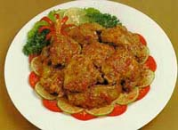

* 500 gr. kip in stukjes, * 1 theel. koenjit,
* 8 kemirienoten, * 2 eetl. citroensap,
* 4 rode uien, * 2 dl. santen,
* 4 rode lomboks, * zout,
* 4 cm. sereh, * 2 eetl. olie.
Pel de ui en snipper hem fijn.
Rooster de kemirinoten in een droge koekenpan en hak ze fijn.
Was de lomboks en hak ze fijn.
Kneus de sereh met de stamper van de vijzel.
Wrijf de ui, kemirienoten, lomboks en de koenjit fijn in de vijzel.
Fruit de fijngewreven kruiden in de olie.
Voeg, als het fijngewreven kruidenmengsel goudbruin is,
de kip, sereh, santen, het citroensap en 2 eetlepels water toe.
Kook de kip vervolgens op laag vuur gaar.
Het gerecht mag niet te droog worden,
voeg als het te droog wordt evenueel nog wat water toe.
(Pittig gerecht voor 4 personen).
